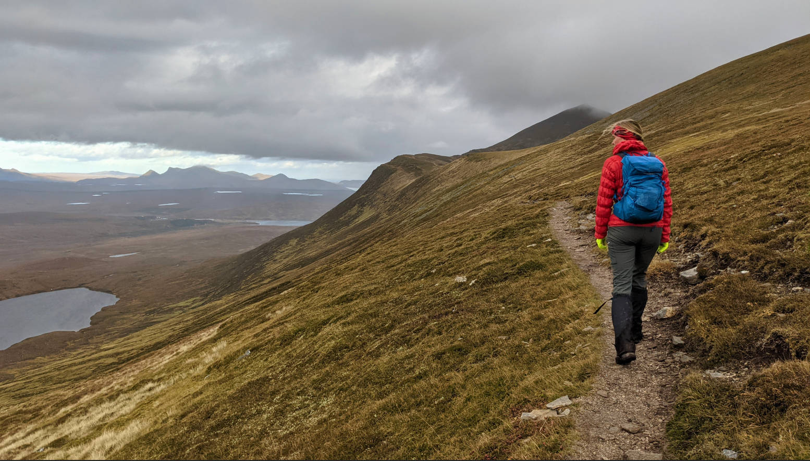
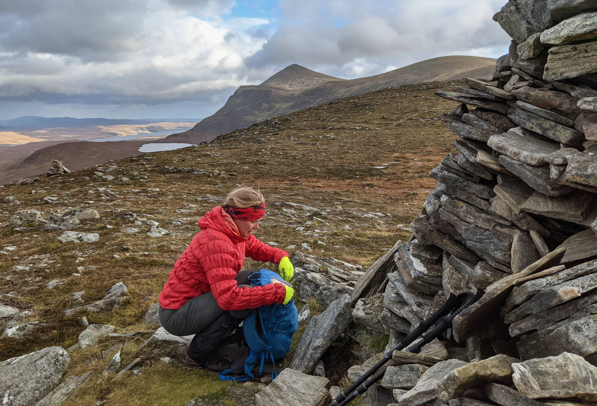
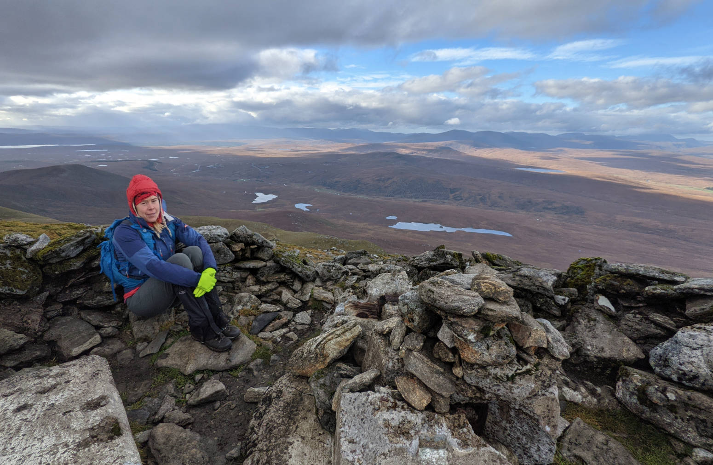
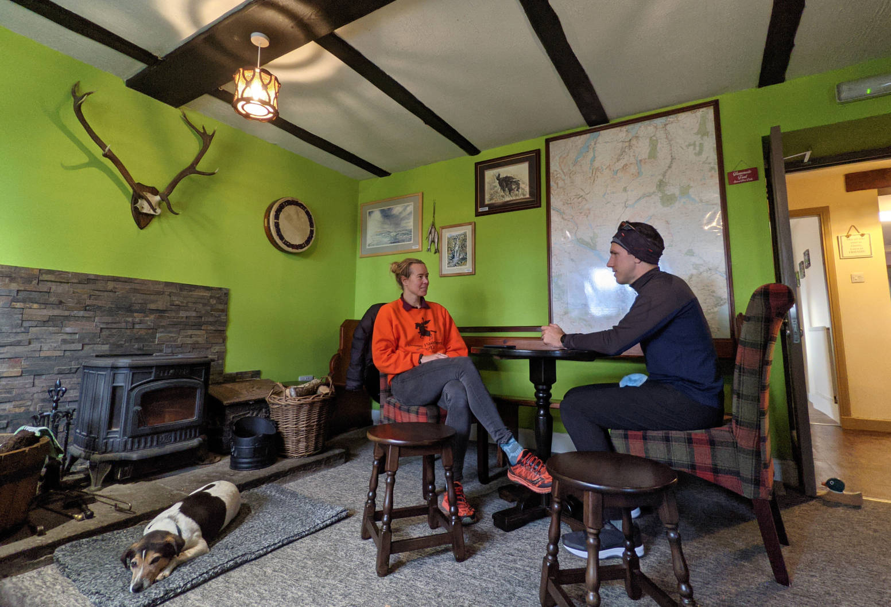

Ben Klibreck is the second most northerly Munro. Towering above the moors, lochains and bogs about an hour and a half drive from our house. Though a bit windy, we thought it would be a good day to go explore.
We decided to take the route that looks on the map to have the shortest time in the bog, and the longest time on dryer steeper hills. It was still quite muddy there too, and we learned later that there was snow on it the day before, but as the wind turned and now came from the south that had all melted, leaving us with the mud.
The route was pretty, a trail followed the side of the ridge, so that we had no view to the north east, but could see all the way to the bottom.

After the ridge, the final top cone came into view. A glance on the map informed that this last bit was another 200 meter up, more than we had expected. We were already almost blown over by the wind, but it was dry, and the clouds at the top seemed to blow away as we were tackling the last meters.

Views from the top were amazing, we could see all the way to the Orkneys, the archipelago we had visited earlier in the year, about 100 km away. We hung around for a while behind the shelter of some rocks out of the cold wind.

Views on the way back were amazing, as now we looked more into the eastern side of the hill, which had some steep corries and a lochain at the bottom of the steepest part to the end of the other side of the massive. It’s always amazing to see it all from so far up high.
Very close to the hill is the Crask Inn, a cute remote inn that is owned by a bishop and his wife. We were the only guests, but their dog held us company in the restaurant area where a nice peat stove was providing some warmth and atmosphere while we were enjoying a cup of soup and a moment of reflection before heading back home.
